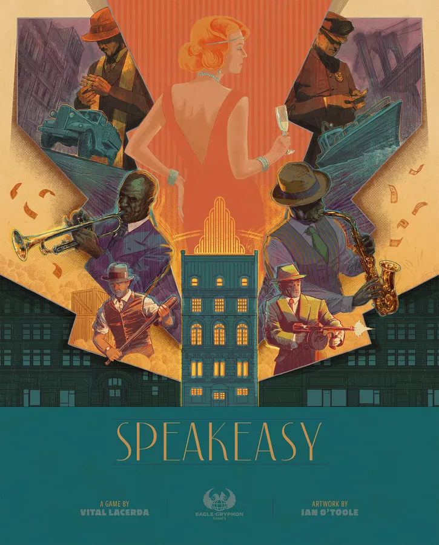

Speakeasy

Publishing
- Published by:
- Eagle-Gryphon Games
- Delta Vision Publishing
- Maldito Games
- Portal Games
- Skellig Games
- Tesla Games
- TLAMA games
- YOKA Games
- Developed by: Shelley Danielle
- Designers: Shelley Danielle, Vital Lacerda, Davis Turczi
- Graphic Designers: Ian O'Toole
- Insert Designers: Randal Lioyd